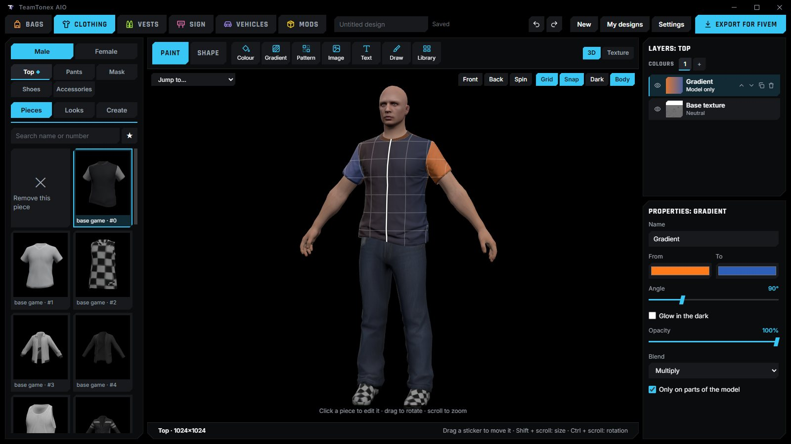
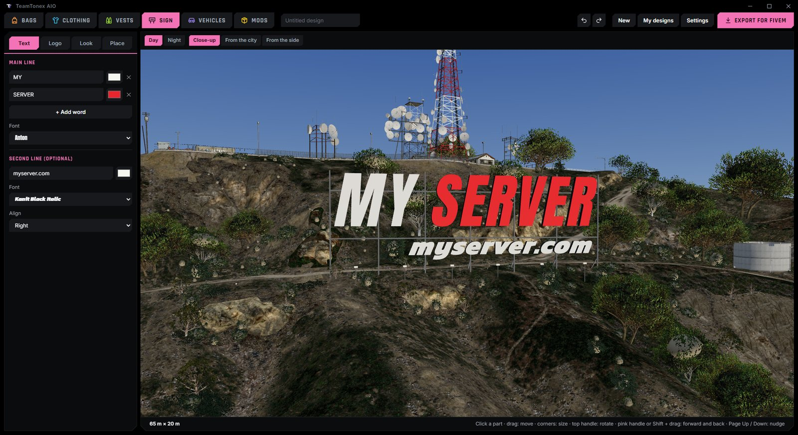
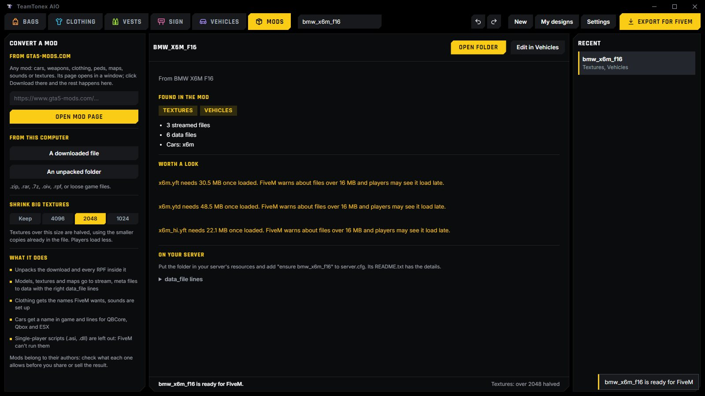

Bags
Custom backpacks and bags for FiveM, from the game's own, from a clothing pack, from scratch or from a photo.
Make custom clothing, EUP-style uniforms and backpacks, put your server's name on the Vinewood sign, add sirens and LED lightbars to cars, and turn gta5-mods.com downloads into FiveM resources. Every tab exports a ready resource.
Windows 10 or 11 and your own copy of GTA V. No account, nothing to pay.

Works with QBCore, Qbox, ESX and standalone servers. Drop the exported folder into resources and add ensure to server.cfg.
Custom backpacks and bags for FiveM, from the game's own, from a clothing pack, from scratch or from a photo.
Tops, pants, masks, shoes and accessories, painted in layers and reshaped: uniforms, gang colours, server merch.
Vests with pouches for police, EMS and EUP-style outfits.
Your own letters and logo on the real Vinewood hill, checked by day and night.
Parts, rims, badges, paint and liveries, body shape, handling, sirens and LED lightbars.
Any gta5-mods.com mod, RPF or .oiv turned into a FiveM resource.

stream and data with the right data_file lines.
The game is only read; nothing in it changes. The program updates itself from GitHub.
Download TeamTonex-AIO-win64.zip from Releases.
Unzip it anywhere you can write to, not Program Files.
Run TeamTonex AIO.exe and point it at your GTA V folder if it isn't found.
Open the Clothing tab, pick a piece, paint it or add your own image, and press Export for FiveM. You get a resource with the clothing already named the way FiveM streams it. Put it in resources, add ensure to server.cfg, and it shows up in your clothing menu.
In the Mods tab, paste the car's gta5-mods.com link and click Download on the page that opens, or pick the file you already downloaded. The program unpacks the archive and its dlc.rpf, and writes the fxmanifest.lua, stream folder, meta files and the car's name for you. When a car comes as Add-On and Replace, only the Add-On is used.
Open the car in the Vehicles tab, go to Lights, and draw a line where the lights should go or pick a ready-made set. Siren bones are added if the car has none, and the siren setting is written to carcols.meta.
Yes. There is no account, no watermark and nothing to pay.
No. Models and textures come from your own copy of GTA V, which the program only reads.
No. Exported clothing has no collision, armour or damage data.